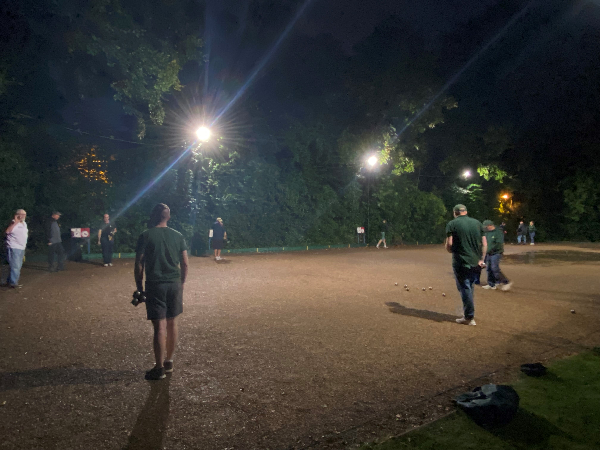

51 Pétanque Club was established in 1979 and is located on the Recreation Ground in the village of Gt Ellingham. New players are always welcome (equipment can be provided) just come down to one of our regular social mornings.
Regular social mornings are on;
League nights are Thursday evenings at 7.30pm
51 Pétanque Club have the below events scheduled;
Sunday 5th June - Gin Trap Charity Pairs in aid of Cancer Research UK
Sunday 17th June - APA Over 55's Pairs
Sunday 25th Sept - Bob Bruce Memorial Pairs
All above competitions are 9.30am registration for a 10am start.
51 Pétanque Club have teams that compete in the Norfolk County Pétanque League and the City of Norwich Winter Pétanque League.
Summer - Ellingham Oaks, The Millers & Ellingham Acorns - The Ellingham Oaks play in Division 2 & will be joined by The Millers for 2022 edition after winning Division 3 in 2021. The Ellingham Acorns are a new entry for 2022 and facing their first season, starting in Division 3.
Winter - Packso 51, JARMAN 51 & Social 51 - In the winter league for 2021/2022 season, Ellingham Oaks won Division 1 and gain promotion to Premiership, JARMAN 51 finished 4th in the same league. Social 51 were competing for the first time and finishes a respectable 4th in Division 2.
1979 - The club was founded by Nick and Margaret Mitchell along with Claudine Guilmain at the Victoria Inn Public House
1980 - The club enters the NCPA League which was the clubs first official year and where the journey of Great Ellinghams Pétanque Club started
1985 - The club moves to the Eight Ringers Public House in Hingham and is renamed Hingham 51
1991 - In a turn of events the club makes the move back to Deopham and is renamed Victoria 51
1995 - Our Country Yokel Badge is introduced
2001 - Due to a rise in players the club expands to 2 teams. Gauloises won Division 3 in 2003 and Gitanes won Division 3 in 2002
2005 - With the sad loss of one of the clubs members the Club Competition is renamed The Bob Bruce Memorial Pairs to which is still a fantastically popular and respected competition to play in of which he would be proud. Gitanes win Division 3 again
2008 - Gauloises won Division 3 again
2009 - The club moves to the Buck Public House in Morley St Botolph and the club is renamed 51 Pétanque Club
2010 - The Gitanes change their name to Buckaneers
2016 - The Buckaneers disband. In the same season the club moves to Scoulton Village Hall with just the Gauloises team while the new terrain is being built at Great Ellingham Recreation Center
2017 - 51 Pétanque Club starts a new era with the Gauloises team now named as The Millers and a new team called Ellingham Oaks created. During the first season, Ellingham Oaks gained promotion to Division 2
2020 to 2022 - These are mixed few years due to Covid 19 but both teams in the summer league did very well with Ellingham Oaks pushing at the top of the league and The Millers winning Division 3
The game of Pétanque is a form of boules which originated from the south of France, where the goal is to throw metal balls as close as possible to a small wooden ball called a cochonnet or jack. The game is normally played on hard dirt or gravel, but can also be played on grass, sand or other surfaces. Pétanque can be played in public areas such as parks but many dedicated facilities have been built.
Pétanque is played by two teams, where each team consists of one, two, or three players. In the singles and doubles games each player has three boules; in triples each player has only two. First of all the home team will flip a coin with the opponents calling heads of tails to determine who will throw the cochonnet. The starting team draws a circle on the ground which is 35-50 centimetres in diameter, plastic circles are often provided and must be marked to show the location so it isn't moved during the end being played, all players must throw their boules from within this circle, with both feet remaining on the ground. The first player throws the jack 6-10 meters away for the end to commence. The team that has thrown the cochonnet will play their first boule. A player from the opposing team then plays their boule and will continue to throw until they are closer to the cochonnet than the opponents boule or they use all their boule up. The teams switch depending who is closer to the cochonnet and once both teams have used all their boule a point is scored for each boule closer to the cochonnet than your opponents closest boule. For example: If you have 3 boule closer to the cochonnet before your opponents closest boule, you will be awarded 3 points and throw the cochonnet on the next end. Place the circle around the cochonnet and as long as you are far enough away from the edge of the terrain and can throw the cochonnet the correct distance you may start the next end. This will continue until either the time limit is reached (if playing a timed match) or one of the teams reach 13 points to win the game.
When standing in the circle with your feet within its boundaries you must either throw your boule underarm with an open palm or with palm down still underarm but as you throw extending your arm and having an upward flick of the wrist which will put a little bit of backspin on your boule giving you more control.